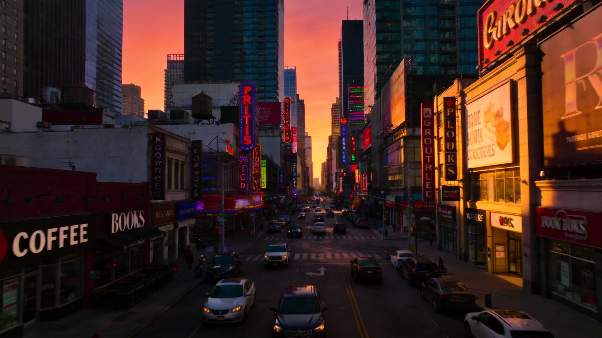
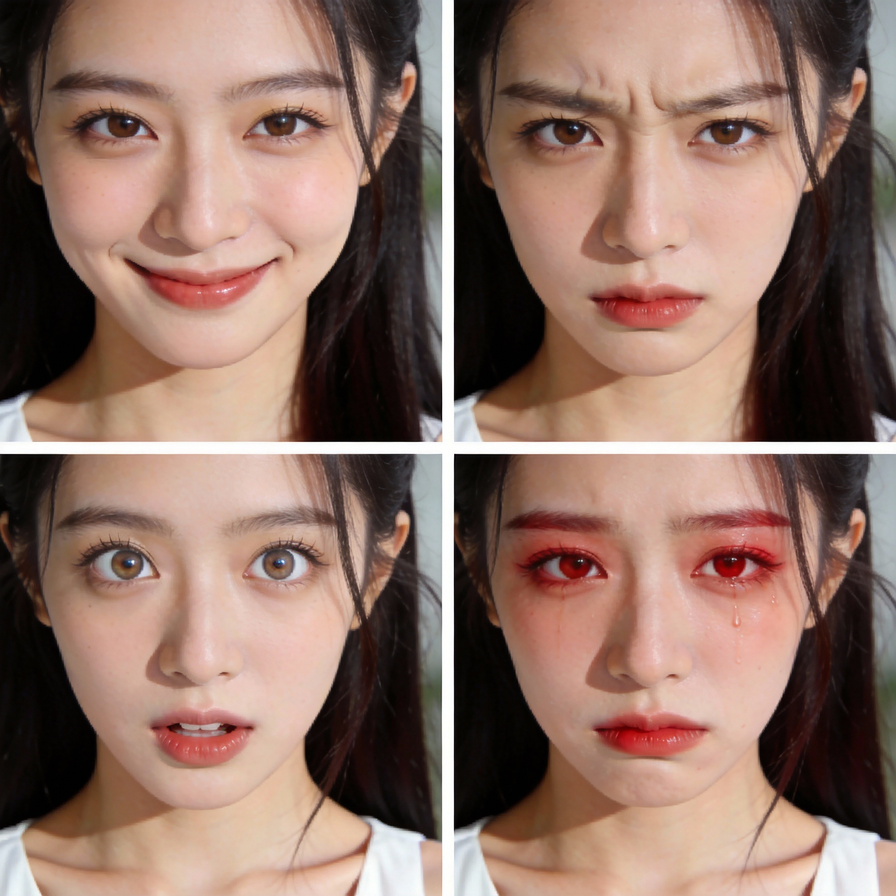

<!doctype html>
<html lang="zh-CN"><meta charset="utf-8"><meta name="viewport" content="width=device-width,initial-scale=1"><title>图片选中状态预览</title>
<style>
*{box-sizing:border-box}body{margin:0;background:#f7f7f7;color:#292929;font:13px 'Segoe UI','Microsoft YaHei',sans-serif;--panel:#fff;--line:#dedede;--muted:#777}body.dark{background:#161616;color:#ededed;--panel:#252525;--line:#444;--muted:#aaa}button,select{font:inherit;color:inherit;background:var(--panel);border:1px solid var(--line);border-radius:8px;padding:8px 12px;cursor:pointer}header{height:54px;display:flex;align-items:center;gap:12px;padding:0 22px;border-bottom:1px solid var(--line)}header strong{margin-right:auto}.canvas{position:relative;height:calc(100vh - 54px);overflow:hidden}.world{position:absolute;left:15%;top:120px;width:850px;height:520px;transform-origin:0 0}.node{position:absolute;width:240px;border:0;padding:0;background:transparent;text-align:left;border-radius:12px;outline:none}.node img{display:block;width:100%;height:180px;object-fit:cover;border-radius:12px;box-shadow:0 5px 15px #0002}.node.portrait{top:270px;left:24px;width:190px}.node.portrait img{height:240px}.node .label{display:flex;justify-content:space-between;color:var(--muted);font-size:12px;margin-bottom:10px}.node.selected:after{content:'';position:absolute;left:calc(-5px / var(--zoom));right:calc(-5px / var(--zoom));top:calc(24px - 5px / var(--zoom));bottom:calc(-5px / var(--zoom));border:calc(2px / var(--zoom)) solid #438bfa;border-radius:calc(12px + 5px / var(--zoom));pointer-events:none}.node:focus-visible{outline:2px dashed #438bfa;outline-offset:10px}.port{position:absolute;top:calc(50% + 12px);width:20px;height:20px;border-radius:50%;background:var(--panel);border:1px solid var(--line);text-align:center;color:var(--muted);line-height:18px;z-index:2}.port.left{left:-20px}.port.right{right:-20px}.toolbar{position:absolute;left:0;top:-72px;white-space:nowrap;padding:10px 12px;border-radius:30px;background:var(--panel);box-shadow:0 8px 25px #0002;display:none;font-size:12px;color:var(--muted)}.selected .toolbar{display:block}.toolbar span{margin:0 9px}.output{position:absolute;left:620px;top:80px;width:180px;height:240px;border-radius:12px;background:var(--panel);border:1px solid var(--line);display:grid;place-items:center;color:var(--muted)}svg.connections{position:absolute;width:850px;height:520px;overflow:visible;pointer-events:none}.connections path{fill:none;stroke:#80aaff;stroke-width:1.5}.hint{position:absolute;bottom:22px;left:22px;color:var(--muted);background:var(--panel);padding:12px 16px;border:1px solid var(--line);border-radius:12px}@media(max-width:800px){.world{left:6%;top:130px}header{padding:10px;gap:6px}header strong{font-size:12px}.hint{font-size:11px}}
</style>
<header><strong>图片选中状态 · 交互预览</strong><label>缩放 <select id="zoom"><option value="1">100%</option><option value=".75" selected>75%</option><option value=".5">50%</option></select></label><button id="theme">深色</button><button id="clear">取消选中</button></header>
<main class="canvas" id="canvas"><div class="world" id="world" style="--zoom:.75;transform:scale(.75)"><svg class="connections"><path d="M240 114 C390 114 440 200 620 200"/><path d="M214 404 C390 404 440 200 620 200"/></svg><button class="node selected" aria-pressed="true"><div class="toolbar"><span>↥ 上传</span><span>⌗ 裁切</span><span>♧ 抠图</span><span>▣ 复制</span><span>▱ 智能体</span><span>↓ 下载</span><span>♧ 删除</span></div><div class="label"><span>▧ 图片</span><span>1080×1446</span></div><span class="port left">＋</span><span class="port right">＋</span></button><button class="node portrait" aria-pressed="false"><div class="toolbar"><span>↥ 上传</span><span>⌗ 裁切</span><span>♧ 抠图</span><span>▣ 复制</span><span>▱ 智能体</span><span>↓ 下载</span><span>♧ 删除</span></div><div class="label"><span>▧ 图片</span><span>1200×1600</span></div><span class="port left">＋</span><span class="port right">＋</span></button><div class="output">▧ 图片节点</div></div><div class="hint">点击图片切换选中 · Ctrl / Shift 点击多选 · 点击空白取消<br>蓝色描边与图片留 5px 间距，线宽随缩放保持 2px</div></main>
<script>
const nodes=[...document.querySelectorAll('.node')];function clear(){nodes.forEach(n=>{n.classList.remove('selected');n.setAttribute('aria-pressed','false')})}nodes.forEach(n=>n.onclick=e=>{e.stopPropagation();const selected=n.classList.contains('selected');if(!e.ctrlKey&&!e.shiftKey&&!e.metaKey)clear();n.classList.toggle('selected',!selected);n.setAttribute('aria-pressed',String(!selected))});document.getElementById('clear').onclick=clear;document.getElementById('canvas').onclick=e=>{if(!e.target.closest('.node'))clear()};document.getElementById('zoom').onchange=e=>{const w=document.getElementById('world');w.style.setProperty('--zoom',e.target.value);w.style.transform=`scale(${e.target.value})`};document.getElementById('theme').onclick=e=>{document.body.classList.toggle('dark');e.target.textContent=document.body.classList.contains('dark')?'浅色':'深色'};
</script></html>
